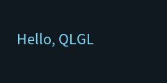

基础知识
QLGL 是一个用 C11 写桌面界面的库。它的想法很朴素：
界面用 HTML + CSS 描述，编译成静态数据，然后 CPU 或 GPU 画出来。
和 GTK 用代码一个个拼控件不同，这里你写的是一份界面描述：
#root { width: 240px; height: 120px; background-color: #101820; }
.hello { margin: 40px 0 0 24px; font-size: 20px; color: #7CE0FF; }
<div id="root">
<div class="hello">Hello, QLGL</div>
</div>
这份描述有两种命运，结果完全一样：
| 时机 | 做法 | 用在哪 |
|---|---|---|
| 构建期 | 宿主工具 qltext 生成一个 .c 文件，编进程序 |
正式产品（界面不变、零加载成本） |
| 运行期 | ql_ui_load_text(html, css) 在启动时算一次 |
换皮肤、插件界面、例程 |
两种路径产出的数据逐字节相同，所以本教程全部用运行期那条 —— 一个 .c
文件就能编译运行，不用先跑代码生成。
准备环境
需要：C11 编译器、CMake ≥ 3.16、以及（可选但强烈建议）FreeType 字体库。
# Debian / Ubuntu
sudo apt install build-essential cmake libfreetype-dev \
libegl-dev libgles-dev libx11-dev
# 编译本库
cmake -S . -B build -DCMAKE_BUILD_TYPE=Release
cmake --build build -j
# 编译并运行第一个例程
cmake --build build -j --target example_01_window
./build/example/example_01_window
只给 --dump 就是截图模式：渲染一帧、写图片、退出（不会卡住等你关窗口）。
所以没有显示器也能跑：
./build/example/example_01_window --dump /tmp/01.ppm
想先看窗口、看完再截图，就显式给帧数：--frames 120 --dump /tmp/01.ppm。
一个程序的四步
每个 QLGL 程序都是这四步，看一眼 example/01_window.c：

#include "common.h"
static const char *k_html =
"<div id=\"root\">"
" <div class=\"hello\">Hello, QLGL</div>"
"</div>";
static const char *k_css =
"#root { width: 240px; height: 120px; background-color: #101820; }"
".hello { margin: 40px 0 0 24px; font-size: 20px; color: #7CE0FF; }";
int main(int argc, char **argv)
{
if (qlgl_init() != QL_OK)
return 1;
ex_load_font();
/* ① 编译界面 */
QLUIDoc *doc = ql_ui_load_text(k_html, k_css);
if (doc == NULL) {
printf("界面编译失败：%s\n", ql_ui_text_last_error());
qlgl_shutdown();
return 1;
}
/* ② 建运行期树 */
QLUIRoot *ui = ql_ui_build(doc);
/* ③ 跑起来（窗口或离屏渲染） */
const int rc = ex_run(ui, 240, 120, "QLGL · 01 window", argc, argv);
/* ④ 收尾 */
ql_ui_free(ui);
ql_ui_doc_free(doc);
qlgl_shutdown();
return rc;
}
① qlgl_init() 与字体
qlgl_init() 初始化内存统计、字体、输入队列。所有程序开头都要调，
结尾配一个 qlgl_shutdown()。
ex_load_font() 是例程里的样板代码，作用是指定一个矢量字体文件：
ql_font_set_default_file("/usr/share/fonts/.../NotoSansCJK-Regular.ttc", -1);
不设也能跑，但会回落到内置的位图字体 —— 那个只有 ASCII，中文全是空白。
可以用环境变量 QLGL_FONT 覆盖，方便换字体。
② ql_ui_load_text(html, css)
它把文本编译成一个 QLUIDoc。这个 doc 里全是扁平数组 + uint16 下标：
nodes[] 每个元素的标签、父子兄弟关系、样式下标、文本下标
styles[] 去重后的样式（QLUIStyle，每个 116 字节）
text_pool 所有文本字符串（'\0' 分隔）
font_sizes[] 用到哪些字号
编译失败时返回 NULL，原因用 ql_ui_text_last_error() 取，形如
css:12: 不支持的属性 'position'。没有静默降级：写错了就是错了。
③ ql_ui_build(doc)
把 doc 展开成运行期节点树（QLUIRoot）。这一步会：
- 分配
QLUINodeRT数组（每个节点带border_box、content_box、paint_box）； - 给有动画的节点起播
@keyframes。
然后 ql_ui_layout(ui, w, h) 算一次布局 —— 之后除非窗口尺寸变了，不会再算。
④ 所有权：两份东西，两次释放
QLUIDoc ← ql_ui_load_text / ql_ui_load_file 创建，ql_ui_doc_free 释放
QLUIRoot ← ql_ui_build 创建，ql_ui_free 释放
ql_ui_build 不接管 doc 的所有权：先 ql_ui_free(ui)，再 ql_ui_doc_free(doc)。
这个约定很硬 —— 好消息是判据只有一条（doc->arena != NULL），所以静态 doc 误进
free 路径不可能发生。
编译期编译长什么样
正式产品一般用构建期编译。CMake 里加一条：
add_custom_command(
OUTPUT ${OUT}/ui_app.c ${OUT}/ui_app.h
COMMAND qltext cc
--html ui/app.html --css ui/app.css --name app --out ${OUT}
DEPENDS ui/app.html ui/app.css)
然后就和一个普通的 C 文件一样用：
#include "ui_app.h" /* extern const QLUIDoc ui_app_doc; */
QLUIRoot *ui = ql_ui_build(&ui_app_doc);
数据在 .rodata 里，加载成本为零 —— 连一次解析都没有。
想两者兼得的话，也可以把运行期编译的结果存成 .qlui 二进制缓存，
下次直接 ql_ui_load_file()。
下一章：文本